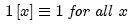

The unit constant function.

1[x,y] = 1[x]1[y]
A constant function with any desired amplitude is generated by multiplying 1[x] by that constant.
Parameters:
Any translation or scaling applied to the argument of any constant function has no effect on the amplitude at any coordinate.
Support: infinite
Area (or volume, in 2D case): infinite
Symmetry: even